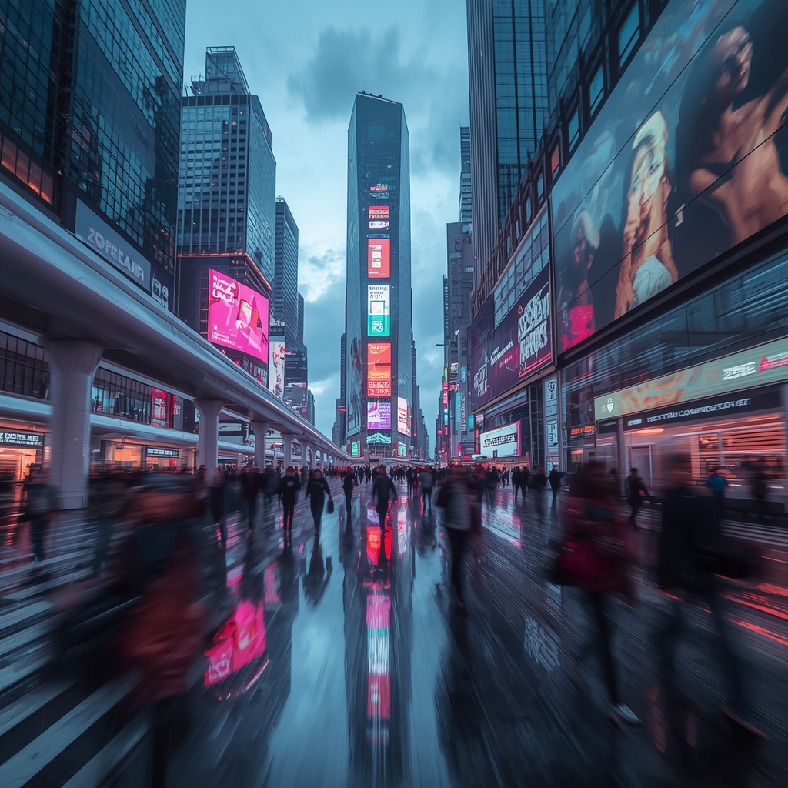
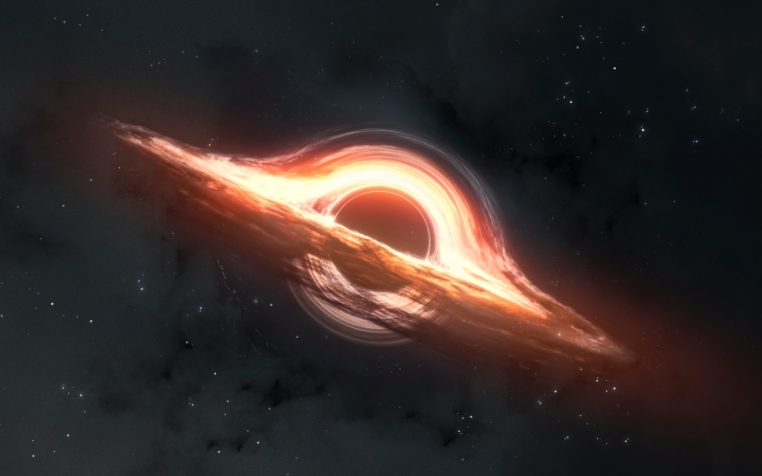
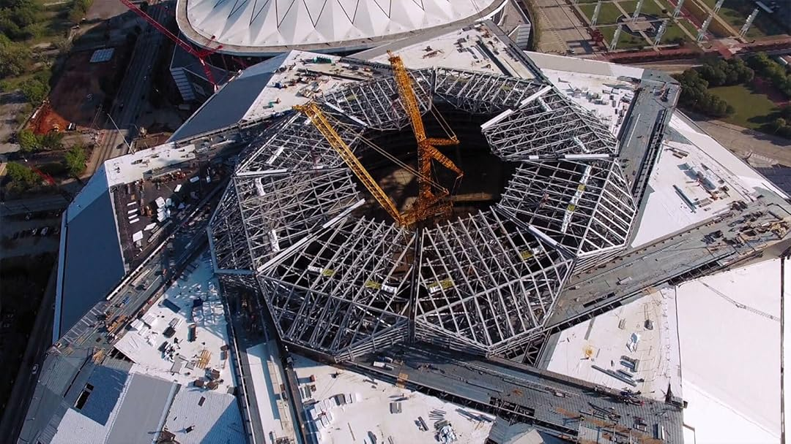

Túnel del Toyo
La obra que transformará la conexión entre Antioquia y Urabá.
La obra que transformará la conexión entre Antioquia y Urabá.
Megaproyectos que están cambiando el mundo.
Cómo la inteligencia artificial está redefiniendo industrias enteras.

Las innovaciones que están redefiniendo la realidad.

Explorando los límites del conocimiento humano.

Las obras que transforman países enteros.
La tecnología que está redefiniendo el futuro.